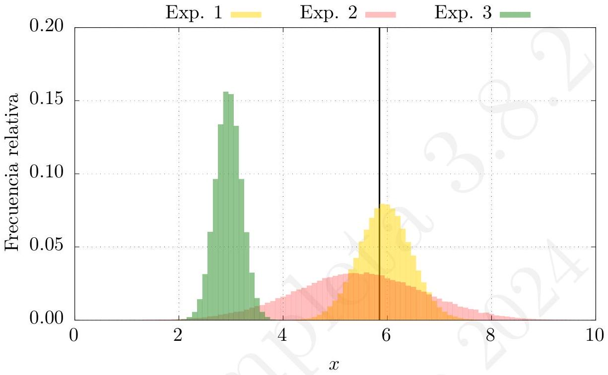

En las ciencias experimentales y cuantitativas, las magnitudes a estudiar se determinan mediante un número y una unidad. Las mediciones nunca son perfectas y siempre llevan asociado un determinado error, una incertidumbre. Incluso el más perfecto de los aparatos experimentales obtendrá una medición que llevará siempre asociada una determinada imprecisión. Los motivos para estas incertidumbres son variados, empezando por las imperfecciones de nuestros sentidos y de los aparatos que empleamos y acabando por las simples equivocaciones, también denominadas como «errores sistemáticos».
Es decir, llamamos error es la desviación existente entre el resultado de la medición de una magnitud física y el valor verdadero de esta. El error es algo implícito al proceso de medida y se puede clasificar, según su origen, como sigue:
Los errores sistemáticos pueden ser prácticamente eliminados al ser posible detectarlos y corregirlos. Sin embargo, los errores accidentales nunca pueden ser eliminados, aunque admiten un tratamiento estadístico que es el que expondremos más adelante.
Por tanto, es imprescindible que en cualquier medida que realicemos se indique la imprecisión cometida, o más bien una estimación (a ser posible una cota superior) de la misma. No tiene sentido proporcionar un resultado de una medición sin un error asociado (que nos habla de la precisión de la medida) y sin una unidad en el valor obtenido. La estimación de los errores en las medidas tiene un cierto carácter subjetivo. Por ejemplo, si tenemos una regla y queremos obtener el error asociado a una medida con ella, normalmente diremos que es la mitad de la mínima unidad que la regla mide. Es decir, si la regla mide en milímetros, el error asociado a la medida será \pm 0,5 \mathrm{~mm}. Sin embargo, esto es una estimación que debe tener carácter de cota máxima. Si, pongamos el caso, medimos en una posición extraña que nos impida ver correctamente las divisiones de la regla, deberíamos aumentar el error asociado a la medida. Es decir, en toda medida existe una limitación debida al método, a los instrumentos o a otras circunstancias que el experimentador admite (y debe admitir) y sobre la cual su experiencia y la capacidad de evaluar el sistema experimental empleado le permite establecer un margen de error.
El error aleatorio es fruto del azar, y puede ser consecuencia de muchas incertidumbres o incluso puede ser debido a variaciones intrínsecas del sistema físico a nivel microscópico. Estos errores pueden ser tratados mediante análisis estadísticos en lo que llamamos «teoría de errores». Sin embargo, en la teoría de errores también es necesario aplicar el sentido común o algún criterio en principio subjetivo. Por ejemplo, para mejorar una determinada medida y reducir el error aleatorio, suele ser recomendable medir muchas veces y hacer una media. Pero si nuestros aparatos de medición no son suficientemente precisos, nunca podremos obtener una medida mucho mejor que la precisión de estos. No podemos obtener con una resolución de micras la medición de una longitud si empleamos una regla con división de milímetros, por muchas veces que midamos y por muchas medias que hagamos. Si en un caso así queremos aumentar la precisión, deberíamos cambiar o mejorar el sistema de medición.
A diferencia de otras materias que aparecen en un grado de Física, en la experimentación y en el análisis de errores, el sentido común tiene un cierto papel, por ejemplo, a la hora de saber cuándo dejar de medir porque los resultados no pueden mejorar más. Los métodos estadísticos y el análisis de errores proporcionan una guía en este sentido, pero será el propio estudiante el que deberá aprender a evaluar los resultados experimentales a través de la guía de personas más expertas, del estudio, de la reflexión sobre los datos obtenidos y, sobre todo, mediante la experiencia y la práctica.
Al realizarse la medición de una magnitud física (que puede haberse hecho a través de un gran número de medidas individuales), nuestro objetivo es presentar el resultado final de la forma:
\text { magnitud }=X^{*} \pm \epsilon,
donde X^{*} (a veces escrito como \langle x\rangle, \bar{x} o incluso x ) es el valor aceptado de la magnitud resultado de la medición (al cual se le denomina también valor esperado o a veces «mejor valor»), y donde \epsilon (a veces escrito como \Delta x o también \sigma_{x} ) es una estimación del error absoluto cometido (al que también llamaremos incertidumbre).
De esta manera, el experimentador está suponiendo, con un cierta seguridad, que el valor el valor verdadero o real, X_{V}, de la magnitud se encuentra dentro del intervalo marcado por \pm \epsilon. Esto es:
X_{V} \in\left(X^{*}-\epsilon, X^{*}+\epsilon\right) \text {. }
Dicho de otra forma, estaríamos razonablemente seguros de que el intervalo definido por la medición de X^{*} y el espaciado marcado por \epsilon nos proporciona el lugar donde se encuentra el valor real de la magnitud. Cuando decimos «razonablemente seguros» nos referimos a que existe un determinado criterio marcado por un nivel de confianza estadístico que nos dice que podemos asegurar que el valor verdadero se encuentra, con alta probabilidad, dentro del intervalo. Sería posible obtener un \epsilon de forma que estuviésemos absolutamente seguros de que el valor real se encuentra dentro del intervalo, pero este intervalo sería enorme como para resultar útil.
En este punto es conveniente recordar que, dado un número escrito en forma decimal, llamaremos cifras significativas a todas aquellas que sean distintas de cero. Un cero solamente puede ser considerado como cifra significativa si se cumple alguna de estas situaciones:
A la hora de escribir la expresión numérica de los resultados experimentales deben aplicarse las siguientes reglas:
Ejemplo 1.1. Indique el número de cifras significativas de las siguientes cantidades: а) 0,0100205 c) 1200 , b) 10,230 d) 1200
En el primer caso tenemos seis cifras significativas (las correspondientes a las cifras 100205). En el segundo caso son cinco las cifras significativas (notamos que el último cero es significativo también al estar detrás de la coma). En el tercer caso tenemos cuatro cifras significativas (ya que la coma indica que los dos ceros a su izquierda son significativos. Por último, 1200 tiene solo dos cifras significas (el 1 y el 2).
1En general, al representar una medida con su error correspondiente, el procedimiento para redondear el número de cifras significativas consiste en:
Ejemplo 1.2. Siguiendo distintos procedimientos de medida se han obtenido las siguientes cantidades para la masa de un objeto y su error. Escriba correctamente, teniendo en cuenta el error, la masa obtenida en cada caso: a) (1,23782 \pm 0,074) \mathrm{kg}. b) (0,087214 \pm 0,0001256) \mathrm{kg}. c) (1276,23 \pm 31,456) \mathrm{kg}. d) (1280,23 \pm 3,1456) \mathrm{kg}.
La forma estrictamente correcta de representar las magnitudes con su error y unidad es mediante el uso de paréntesis. De esta manera, se indica explícitamente que la unidad se aplica tanto al valor de la magnitud como al del error. Sin embargo, algunos textos científicos obvian esta notación, de manera que veremos, por ejemplo, 5,2 \pm 0,2 \mathrm{~kg} en lugar de ( 5,2 \pm 0,2 ) kg. Ambas notaciones son equivalentes y en la primera se entiende que la unidad de kilogramos se aplica tanto al 5,2 como a la incertidumbre 0,2. En cualquier caso, el estudiante debe acostumbrarse a aplicar la notación con paréntesis, especialmente cuando proporcione un resultado final.
Conviene también mencionar que en muchos textos y artículos se representa el error de una medida como en los siguientes ejemplos:
1,24(7) ; \quad 87,21(13) ; \quad 1,280(3) .
Esta representación es formalmente equivalente a:
1,24 \pm 0,07 ; \quad 87,21 \pm 0,13 ; \quad 1,280 \pm 0,003
Usaremos una única cifra significativa ya que si, por ejemplo, estamos presuponiendo un error de una décima de metro, no tiene demasiado sentido dar una precisión del orden de la centésima de metro. Esto es, si afirmamos que tenemos una imprecisión en nuestra medida del orden de la décima de metro, no debemos tener en cuenta las centésimas o milésimas de metro.
Cabe preguntarse por qué tomamos dos cifras significativas en caso de que la primera de ellas sea un uno. Esta consideración obedece, fundamentalmente, al intento de minimizar el error relativo hasta límites aceptables. Hablando sin exceso de rigor, cuanto mayor sea la primera cifra significativa frente a la segunda, menos relevante será esta última. Tomamos en general como error una única cifra significativa porque la adición de cifras no modifica, sustancialmente, la magnitud del error. Esto es, un error de, por ejemplo, e_{1}=0,5 (en unidades arbitrarias) es esencialmente el mismo que un error e_{2}=0,51. De hecho, si suponemos cierto el error e_{2}=0,51, al aproximar el error por e_{1} la diferencia entre las dos es de un factor 1 / 50, es decir, de un 2 \%, lo cual es un resultado más que aceptable. ¿Qué ocurre al considerar, por ejemplo, e_{3}=0,1 y e_{4}=0,11 ? Que la diferencia relativa es de 1 / 10, es decir, un 10 \%, lo que es, en comparación, un error sensiblemente mayor que el anterior.
El criterio a la hora de tomar estimadores de error se basa en un compromiso entre simplicidad, precisión y exactitud. En laboratorios de estudiantes, un error relativo superior al 10 \% debe ser tratado con cautela e intentar evitarse, de ahí que se tomen más cifras significativas cuando el redondeo puede afectar, con seguridad, al valor esperado o su error.
Es importante entender la diferencia entre cifras decimales y cifras significativas. Las cifras decimales, per se, no tienen significado físico, pues una cantidad tendrá más o menos cifras decimales dependiendo de la unidad en que se esté midiendo dicha cantidad. Una medida de la diagonal de un teléfono móvil puede tener, por ejemplo, dos cifras decimales si medimos en centímetros (10,75 \mathrm{~cm}) o cuatro si medimos en metros (0,1075 \mathrm{~m}). Lo importante, en todos los casos, es el número de cifras significativas (en este caso, cuatro) que nos da información sobre la precisión del instrumento de medida utilizado. Cuatro cifras significativas, en este ejemplo, nos dice que el instrumento arrojará un error de la diezmilésima parte de la medida.
Sobre el redondeo es necesario aclarar que, si queremos aproximar un valor numérico con un número de cifras significativas menor, el redondeo debe hacerse de forma que el número resultante sea el más cercano al valor numérico inicial. Por ejemplo, si tenemos una medida x=12,51 (en unidades arbitrarias) y queremos aproximar a la unidad (dos cifras significativas), nos planteamos si debemos aproximar por defecto (en inglés, to floor) tomando x_{i}=12, o por exceso (en inglés, to ceil) tomando x_{s}=13. Dado que \left|x-x_{s}\right|<\left|x-x_{i}\right|, el error cometido al aproximar por exceso es menor, y el resultado final debe ser x \simeq 13. Igualmente, para x=12,56 tenemos que \left|x-x_{s}\right|<\left|x-x_{i}\right|. Por tanto x=12,56 \simeq 13.
Un caso extremo es el que ocurre cuando \left|x-x_{s}\right|=\left|x-x_{i}\right|. En ese caso debemos recurrir a algún criterio de tie-breaking que «rompa» esa simetría en el resultado. Si bien existen numerosas opciones, un criterio usual consiste en el redondeo hacia arriba (en valor absoluto).
Este método consiste en sumar 0,5 al valor absoluto de la medida, y acompañar el signo correspondiente. De este modo, x=12,50 se aproximaría a x \simeq \operatorname{signo}(x)(|x|+0,50)=13. Pero x=-12,50 se aproximaría a x \simeq \operatorname{signo}(x)(|x|+0,50)=-13. La ventaja de usar este > método es que es un método de aproximación simétrico, lo que hace que en promedio los errores cometidos al aproximar se compensen entre sí.
En definitiva, las incertidumbres experimentales deben redondearse (casi) siempre a un cifra significativa y, a su vez, la última cifra significativa de la medida debe ser del mismo orden de magnitud que el error experimental. A menudo, al aplicar estas reglas de redondeo y de expresión de los resultados, aparece la duda de cuántas cifras significativas debemos usar en los cálculos que puedan aparecer más adelante. Sin duda, puede surgir una cierta imprecisión en las operaciones posteriores si usamos las cantidades redondeadas. Para reducir los errores causados por el redondeo al realizar cálculos posteriores, consideraremos el criterio que se emplea en el texto de Taylor [15]: usar (al menos) una cifra significativa más que la que consideramos bien expresada de acuerdo a las reglas de redondeo que hemos definido. Una vez terminados los cálculos y obtenido el resultado final, redondearemos de acuerdo a las reglas explicadas para expresar correctamente el resultado.
Además del error absoluto o incertidumbre, suele incluirse en el resultado el error relativo, definido como:
\epsilon_{r}=\frac{\epsilon}{X^{*}},
donde vemos que el error relativo es una cantidad adimensiona 2^{2}. Es habitual expresar este en términos de porcentajes, para lo cual basta multiplicar por 100 el resultado de la anterior ecuación.
No hay que confundir error absoluto y error relativo. El error relativo da una medida del porcentaje de error cometido en nuestra medición (directa o indirecta). Es importante señalar que el error relativo, al ser una cantidad adimensional, da buena cuenta de la bondad de los resultados. Un error
2absoluto, sin saber el valor esperado asociado a él, no aporta información sobre la incertidumbre del proceso de medida. Un error relativo da, por sí mismo, dicha información.
Como ejemplo, supongamos una medida del radio de la Tierra ( R=6400 km ) estimado por un procedimiento indirecto que arroja un error absoluto e=300 \mathrm{~km}, y una medida del radio de un alfiler ( R=0,15 \mathrm{~mm} ) con un error e=0,01 \mathrm{~mm}. Aunque a priori el error en el radio de la Tierra podría parecer mayor ( 300 km es la distancia que separa Madrid de Zaragoza), lo cierto es que porcentualmente el error cometido en la medida del radio de la Tierra es menor que el error asociado al alfiler. El error relativo de la medida de la Tierra es e_{r}=0,05, en tanto que el error relativo del alfiler es e_{r}=0,07. Si damos solo los errores absolutos de ambas medidas no sabemos cuál ha sido más precisa. Si damos solo los errores relativos, sí.
Concluimos así que es importante realizar una comparación adimensional entre magnitudes, pues es la única forma de establecer equivalencias entre errores «grandes» y «pequeños». ¿Los errores son grandes con respecto a qué? Es el error relativo lo que nos dice, taxativamente, cuán precisos hemos sido en nuestra medida.
Se dice que el resultado de una medida es exacto si el valor verdadero de la magnitud se encuentra dentro del intervalo determinado por el valor esperado y el error absoluto asociado, esto es, si X_{V} \in\left(X^{*}-\epsilon, X^{*}+\epsilon\right).
El resultado de una medida es tanto más preciso cuanto menor sea el error relativo del mismo. Puede así ocurrir que tengamos una medida muy precisa pero inexacta (por ejemplo, debida a un error sistemático no detectado) y que, por el contrario, una medida sea exacta pero imprecisa.
La figura 1.1 ilustra la diferencia entre precisión y exactitud. Se han realizado tres experimentos para medir la longitud de un determinado objeto (cuya longitud real es x=5,85 (en unidades arbitrarias)). Para cada uno de los experimentos se realizó un conjunto N de medidas (con N suficientemente grande) y se realizó un histograma de frecuencias relativas, esto

es, una gráfica en función de x del número de veces en que el resultado de la medida cayó en el subintervalo ( x_{i}+\delta x ), con \delta x \ll 1, dividido por el número total de medidas N. Podemos entender el histograma de frecuencia relativa como la distribución de probabilidad de la longitud. Para cada uno de los experimentos se obtiene una distribución de probabilidad y para cada distribución de probabilidad, el máximo coincide con el valor medio, en tanto que la semianchura de la distribución puede interpretarse como una medida del error absoluto. Esto es, cuanto mayor sea la anchura, mayor es el error absoluto y, por tanto, el error relativo asociado a ese experimento.
De esta gráfica se desprende, directamente, que los experimentos 1 y 2 (en amarillo y rojo, respectivamente) obtuvieron un resultado exacto, en tanto en cuanto el valor real (mostrado con línea negra continua) cae dentro del intervalo de confianza de las medidas realizadas. De ellas dos, el experimento 1 es más preciso (por tener una dispersión menor y, por tanto, un error relativo menor) que el experimento 2 (que muestra una mayor anchura en su distribución de valores).
El experimento 3 (en verde), por su parte, si bien puede considerarse preciso (porque la distribución de anchuras es «pequeña» en comparación con el experimento 2, por ejemplo) no es exacto, pues en ningún caso el valor real se superpone a la distribución de probabilidad mostrada.
Como se ha comentado anteriormente, cada medición o valor que escribamos tiene que tener una incertidumbre asociada y una unidad. Sin ambas cosas, el valor numérico no tiene sentido, porque no sabríamos cuál es la fiabilidad del valor ni a qué se refiere. Es decir, para medir una magnitud hay que comparar siempre con un patrón de medida como puede ser el metro para comparar longitudes. Sin embargo, las unidades no son absolutas ya que son un patrón de comparación y bien podríamos medir longitudes en pies. Por tanto, decir que algo mide l=1,0 \pm 0,5 sin más no tiene sentido ya que es necesario indicar el patrón con el que se compara esa medida.
El número de patrones que se puede utilizar es enorme, pero dado que muchas magnitudes físicas están relacionadas, al final puede reducirse el número de unidades patrón a un mínimo. Por ejemplo, la velocidad es la distancia dividida entre el tiempo, luego el patrón de velocidad estará referido al de la distancia y al del tiempo. El sistema de unidades más empleado por la comunidad científica es el Sistema Internacional (S.I.), que se adoptó en 1917 y que consiste en 7 unidades fundamentales que se resumen en la tabla 1.1 (sobre el S.I. hablaremos más en detalle en el siguiente apartado).
Cuando hablamos de «símbolo» en estas unidades fundamentales nos referimos a una forma de llamar a sus magnitudes sin necesidad de dar un número y una unidad; a este símbolo se le denomina frecuentemente dimensión y puede aparecer elevado a una potencia entera positiva o negativa. Manejar estos símbolos es muy útil para conocer las unidades y dimensiones derivadas de las fundamentales, que son las que se resumen en la tabla 1.1.
Ejemplo 1.3. La segunda ley de Newton nos dice que F=m a, donde F es la fuerza, m es la masa del objeto y a es la aceleración, la cual se
| Magnitud | Símbolo | Unidad S.I. | Símbolo S.I. |
|---|---|---|---|
| Tiempo | T | segundo | s |
| Longitud | L | metro | m |
| Masa | M | kilogramo | kg |
| Intensidad de corriente | I | amperio | A |
| Temperatura | \theta | kelvin | K |
| Cantidad de sustancia | N | mol | mol |
| Intensidad luminosa | J | candela | cd |
Tabla 1.1. Unidades y símbolos del Sistema Internacional de Unidades S.I.
define como la derivada segunda de la posición respecto al tiempo:
a=\frac{d^{2} x}{d t^{2}}=\frac{d}{d t} \frac{d x}{d t} .
De Física básica sabemos que la fuerza se expresa en newtons (N) en el S.I., pero ¿cuáles son las dimensiones de N?
Es posible que conozcamos el resultado de memoria, pero si no es así, podemos calcular las dimensiones de N usando las expresiones anteriores. Esto es, las dimensiones de la aceleración son \mathrm{L} / \mathrm{T}^{2} (basta con partir de la definición de aceleración) y por tanto las dimensiones de la fuerza serán \mathrm{ML} / \mathrm{T}^{2} cuya unidad asociada, \mathrm{kg} \mathrm{m} \mathrm{s}^{-2}, define el newton.
Habitualmente, cuando hablamos de las dimensiones de una magnitud, se escribe la misma entre corchetes [ ]. Así, las dimensiones de la fuerza serían [F]=\mathrm{ML} / \mathrm{T}^{2}, las de velocidad [v]=\mathrm{L} \mathrm{T}^{-1}, etc.
El cálculo anterior es el ejemplo más simple de lo que se conoce como análisis dimensional, que se ocupa de los conceptos de magnitud, dimensión y homogeneidad de las ecuaciones físicas. No entraremos más en detalle en este campo por el momento. Operaciones como las mostradas en el apartado anterior son muy útiles, especialmente cuando nos encontramos en un ámbito experimental en donde no estamos seguros de las relaciones entre magnitudes físicas implicadas. Además, nos permiten detectar errores en los cálculos que hayamos realizado. Siempre es recomendable, cuando calculamos una determinada magnitud a partir de otras, comprobar que las unidades encajan. Si no es así, es que hay necesariamente un error en alguna parte. La mayor parte de los errores que cometen los estudiantes de Técnicas Experimentales en un guión de prácticas tiene que ver con una equivocación a la hora de emplear las fórmulas.
Ejemplo 1.4. Supongamos que recordamos el valor ( 6,67 \times 10^{-11} ), pero no las unidades de la constante de gravitación universal, G. Valiéndose del análisis dimensional, deduzca las unidades de G.
Recordemos que:
F=G \frac{M m}{r^{2}} .
Por tanto, las dimensiones de G son:
[G]=\frac{[F][r][r]}{[M][m]} .
Si recordamos que [F]=[m a]=\mathrm{MLT}^{-2} obtenemos entonces:
[G]=\frac{\mathrm{ML}}{\mathrm{~T}^{2}} \frac{\mathrm{~L}^{2}}{\mathrm{M}^{2}}=\frac{\mathrm{L}^{3}}{\mathrm{MT}^{2}},
de donde deducimos que las unidades de G son \mathrm{m}^{3} /\left(\mathrm{kg} \mathrm{s}^{2}\right). Por tanto, escribimos:
G=\left(6,67 \times 10^{-11}\right) \mathrm{m}^{3} /\left(\mathrm{kg} \mathrm{~s}^{2}\right) .
Una herramienta muy útil del análisis dimensional es el «teorema \pi de Vaschy-Buckingham». El teorema establece que existe al menos una forma de escribir una relación o ley física que liga n variables que dependen de k dimensiones, en términos de n-k nuevas variables adimensionales. Más formalmente, supongamos que tenemos q_{i} variables, con 1 \leq i \leq n que dependen de k dimensiones fundamentales independientes, como las que estamos viendo en esta sección (longitud, masa, tiempo…) con n>k. Tenemos que esas variables conforman una ecuación que podemos escribir como:
f\left(q_{1}, q_{2}, \ldots, q_{n}\right)=0
entonces el teorema establece que la expresión anterior es equivalente a otra función, \phi :
\phi\left(\Pi_{1}, \Pi_{2}, \ldots, \Pi_{n-k}\right)=0
donde \operatorname{los} \Pi_{j} son nuevos parámetros adimensionales construidos a partir de n-k relaciones de los q_{i} de la siguiente forma:
\Pi_{j}=q_{1}^{m_{1 j}} q_{2}^{m_{2 j}} \ldots q_{i}^{m_{i j}}
Los exponentes m_{i j} son enteros. La elección de los \Pi_{j} no es única y el teorema no establece una regla para construirlos.
A través de las dimensiones podemos comprobar que los argumentos de las funciones exponenciales, logarítmicas, trigonométricas, etc, deben ser adimensionales. Esto es, supongamos que tenemos dos magnitudes A y B, tal que A=\ln B. A partir de la relación anterior, se deduce que d A=d B / B. Si ahora nos centramos en las dimensiones de estas magnitudes, obtenemos que [A]=[B] /[B]=1. Como B=e^{A}, si [A]=1, entonces [B]=1. Igualmente podemos relacionar A y B a través de A=\operatorname{sen} B=\sqrt{1-\cos ^{2} B}. Dado que las dimensiones de \cos ^{2} B tienen que ser las mismas que las de la unidad, obtendremos que \left[\cos ^{2} B\right]=[1]=1. Y por tanto [B]=1. Para terminar este apartado, conviene dedicar una atención especial a las magnitudes angulares. Se puede comprobar fácilmente que son magnitudes adimensionales a partir de la relación entre el radio de la circunferencia, R, la longitud de un arco de la misma, l, y el ángulo central subtendido por dicho arco, \phi. Esta relación es \phi=l / R, de donde:
[\phi]=\frac{[l]}{[R]}=\frac{L}{L}=1
Aunque los ángulos planos no tengan dimensiones, sí tienen unidad de medida, que se define a partir de la relación anterior aplicada a una circunferencia completa. En este caso, el ángulo central subtendido por una circunferencia completa es 2 \pi, y la unidad de ángulo plano es la que hace que el ángulo central correspondiente a una circunferencia completa mida 2 \pi. A esta unidad se le denomina radián y se suele representar abreviadamente como rad. De esta definición se deduce que la relación entre los grados sexagesimales, utilizados habitualmente en geometría, y los radianes es:
1 \mathrm{rad}=\frac{360}{2 \pi}=57,29577951 \ldots
sin más que recordar que el ángulo central correspondiente a una circunferencia completa es 2 \pi \mathrm{rad} y 360^{\circ}.
El caso es muy parecido por lo que se refiere a los ángulos sólidos. En este caso, tomamos como referencia la relación entre el radio de una esfera, R, un sector esférico de superficie S y el ángulo sólido subtendido por dicho sector esférico, \Omega. En este caso la relación es \Omega=S / R^{2}, de donde:
[\Omega]=\frac{[S]}{\left[R^{2}\right]}=\frac{L^{2}}{L^{2}}=1
También en este caso los ángulos sólidos son magnitudes adimensionales pero tienen unidad de medida, que se define a partir de la relación anterior aplicada a una esfera completa. En este caso, el ángulo sólido subtendido por una esfera completa es 4 \pi, y la unidad de ángulo sólido es la que hace que el ángulo sólido subtendido por una esfera completa mida 4 \pi. A esta unidad se la denomina estereorradián y se suele abreviar como sr.
Las magnitudes adimensionales pueden originar problemas de confusión en las unidades cuando se utilizan para construir magnitudes derivadas de las fundamentales. Como ejemplo consideremos las siguientes magnitudes:
Todas estas magnitudes cuando se expresan en función de las unidades fundamentales tienen la misma expresión, \mathrm{s}^{-1}, puesto que tanto el número de ciclos, como los ángulos y el número de núcleos que se desintegran son
Figura 1.2. Unidades del S.I. y su relación con constantes fundamentales. magnitudes adimensionales. Por tanto, aunque es formalmente correct d^{3} escribir todas ellas en informes técnicos de la misma manera, es decir \mathrm{s}^{-1}, el uso de los nombres o abreviaturas específicas de las unidades (Hz, rad/s o Bq) o las magnitudes (frecuencia, frecuencia angular, velocidad angular, actividad) permite resolver la ambigüedad. Por tanto, es conveniente utilizar dichos nombres específicos en lugar de la expresión \mathrm{s}^{-1}.
El 16 de noviembre de 2018, la 26. { }^{\text {a }} Conferencia General de Pesos y Medidas (CGPM) actualizó las definiciones de las 7 unidades fundamentales del S.I. cuya fecha de entrada en vigor fue el 20 de mayo de 2019. Esta revisión es muy importante ya que se abandonan los patrones físicos y las medidas experimentales para determinar el valor de las unidades y, en su lugar, se «fijan» los valores de ciertas constantes fundamentales a partir de las cuales se establecen los valores de las unidades. 4
Antes era al revés: dados los valores fijados con patrones, las constantes fundamentales tomaban su valor correspondiente a partir de medidas experimentales. Pero el problema radicaba en que algunos patrones eran difíciles
| 3 | Unidad S.I. | Constante asociada |
|---|---|---|
| segundo, s | \Delta \nu_{\mathrm{Cs}}{ }^{(1)} | 9192631770 Hz |
| metro, m | c^{(2)} | 299792458 \mathrm{~m} \mathrm{~s}^{-1} |
| kilogramo, kg | Cte. de Planck, h | 6,62607015 \times 10^{-34} \mathrm{~kg} \mathrm{~m}^{2} \mathrm{~s}^{-1} |
| amperio, A | Carga del electrón, e | 1,602176634 \times 10^{-19} \mathrm{~A} \mathrm{~s} |
| kelvin, K | Cte. de Boltzmann, k | 1,380649 \times 10^{-23} \mathrm{~kg} \mathrm{~m}^{2} \mathrm{~s}^{-2} \mathrm{~K}^{-1} |
| mol | Cte. de Avogadro, N_{\mathrm{A}} | 6,02214076 \times 10^{23} \mathrm{~mol}^{-1} |
| candela, cd | K_{\mathrm{cd}}{ }^{(3)} | 683 \mathrm{~cd} \mathrm{sr} \mathrm{kg}^{-1} \mathrm{~m}^{-2} \mathrm{~s}^{3} |
Tabla 1.2. Definición de las unidades del S.I. a partir de constantes fundamentales según la resolución de la CGPM de 16 de noviembre de 2018. { }^{(1)} Transición hiperfina del estado fundamental no perturbado del { }^{133} \mathrm{Cs}. { }^{(2)} Velocidad de la luz en el vacío. { }^{(3)} Intensidad radiante de una fuente monocromática de frecuencia 540 \times 10^{12} \mathrm{~Hz} que emite con la eficiencia dada.
de establecer, en particular el patrón de kilogramo, cuya masa verdadera es impredecible porque el material del que está hecho el «kilogramo prototipo» (un cilindro de una aleación especial custodiado en la Oficina Internacional de Pesas y Medidas), está sujeto a cambios físicos y químicos que sus condiciones especiales de conservación no pueden evitar. Así, se llegó a la paradoja de que las constantes fundamentales se podían establecer con mejor precisión que la incertidumbre asociada a la definición de kilogramo patrón.
En realidad, ya desde la anterior revisión del S.I. (1983), el segundo, el metro y la candela se establecían a partir de constantes fundamentales. En la revisión de 2018 se amplía esta forma de definición al resto de unidades, tal y como se ve en la tabla 1.2, donde se muestra qué constantes fundamentales se asocian a cada unidad y su valor fijado. Algunas unidades dependen solo de la constante que las define, como son el segundo y el mol, y el resto dependen de su constante y de otras unidades por ejemplo el metro, que depende también de la definición del segundo, o el kilogramo, que depende tanto de la definición del metro como del segundo.
Como decíamos estas nuevas definiciones dejan de usar patrones, como el kilogramo prototipo, o medidas indirectas como la asociada anteriormente al amperio que se definía mediante la corriente entre hilos paralelos que da- ba lugar a una cierta fuerza que tenía que ser medida. Además tienen otras consecuencias, como que la constante \mu_{0}, la permeabilidad magnética del vacío, ya no está fijada sino que ahora depende de las medidas experimentales de la constante de estructura fina, \alpha, como \mu_{0}=\left(2 h / c e^{2}\right) \alpha. Actualmente su valor es \mu_{0}=4 \pi \times 1,00000000082(20) \times 10^{-7}; se deja como ejercicio deducir sus unidades en términos de unidades fundamentales tal y como se ha enseñado en esta sección, sabiendo que \alpha es adimensional.
Ej. 1.1 — ¿Cuál es la forma más adecuada de expresar la cantidad ( 4,04312 \pm 0,0356789) \mathrm{m} ?
Ej. 1.2 - La forma más adecuada de expresar la cantidad (2,190745 \pm 0,14605) \mathrm{m} / \mathrm{s} entre las siguientes opciones es: (a) (2,20 \pm 0,15) \mathrm{m} / \mathrm{s}. (b) (2 \pm 0,1) \mathrm{m} / \mathrm{s}. (c) (2,19 \pm 0,15) \mathrm{m} / \mathrm{s}. (d) (2,1907 \pm 0,1461) \mathrm{m} / \mathrm{s}.
Ej. 1.3 - Idealmente esperaríamos que, tras realizar un conjunto de medidas en el laboratorio, x_{i}, el resultado obtenido ( X^{*} \pm \epsilon ) fuera exacto y preciso. ¿Por qué? (a) Porque la exactitud garantiza que el valor real está en el intervalo \left(X^{*}-\epsilon, X^{*}+\epsilon\right) y la precisión que el error relativo (y por tanto la dispersión de los datos) es baja. (b) Porque la precisión garantiza que el valor real está en el intervalo \left(X^{*}-\epsilon, X^{*}+\epsilon\right) y la exactitud que el error relativo (y por tanto la dispersión de los datos) es baja. (c) Porque un resultado exacto tiene que ser obligatoriamente preciso.
De no ser así, debemos buscar errores sistemáticos en nuestro procedimiento de medida. (d) Solo es necesario exigir precisión en los datos (lo que garantiza errores pequeños) pero no exactitud.
Ej. 1.4 - En un laboratorio de electrónica se construye un circuito formado por una resistencia y una fuente de tensión. Con la ayuda de un voltímetro y un amperímetro se determina la resistencia eléctrica del resistor mediante la ley de Ohm, V=R I, para distintos voltajes introducidos. Del ajuste lineal de los pares V, I se obtiene una pendiente R=1,99996 \mathrm{k} \Omega, con un error \epsilon=0,00012 \mathrm{k} \Omega. El fabricante del resistor ha proporcionado un valor (que consideramos real) R^{\text {fab }}=1 \mathrm{k} \Omega. En estas condiciones puede afirmarse: (a) Que el resultado es exacto y preciso. (b) Que el resultado es exacto pero no preciso. (c) Que el resultado no es exacto pero sí preciso. (d) Que el resultado no es ni exacto ni preciso.
Ej. 1.5 - El trabajo necesario para desplazar un cuerpo, W, puede definirse como el producto de la fuerza aplicada, F, por el desplazamiento, x. ¿Cuáles son las dimensiones del trabajo? Exprese el resultado en unidades genéricas, no en unidades concretas del sistema internacional.
Ej. 1.6 - Dada la siguiente expresión:
r=\frac{\cos \theta_{1}}{\cos \theta_{2}}
¿cuáles son las unidades de r en el Sistema Internacional?
Ej. 1.7 - Se deja caer una bola desde el reposo. Se mide el desplazamiento vertical de la misma en centímetros y el tiempo que tarda en caer en segundos. Teniendo en cuenta estas unidades, se nos pide que demos un valor medio y un error para la aceleración de la gravedad. Este valor debe tener como unidades: (a) \mathrm{kg} \mathrm{m} / \mathrm{s}^{2}. (b) \mathrm{m} / \mathrm{s}^{2}. (c) \mathrm{ms}^{2}. (d) \mathrm{m} / \mathrm{s}.
Ej. 1.8 - La ecuación de estado de los gases ideales es: P V=n R T. Donde P es la presión, V el volumen, n el número de moles, R la constante de los gases ideales y T la temperatura. ¿Cuáles son las dimensiones de R ? (a) \mathrm{ML}^{2} \mathrm{~T}^{-2} \mathrm{~N}^{-1} \theta^{-1}. (b) \mathrm{M} \mathrm{T}^{-2} \mathrm{~N}^{-1} \theta^{-1}. (c) \mathrm{kg} \mathrm{m}^{2} \mathrm{~s}^{-2} \mathrm{n}^{-1} \mathrm{~K}^{-1}. (d) Es adimensional.
Ej. 1.9 - En un experimento se pretende comprobar la conservación del momento angular. Para ello se miden los momentos angulares inicial, L, y final, L^{\prime} (en \mathrm{kg} \mathrm{m}^{2} \mathrm{~s}^{-1} ) de un sistema giratorio, resumidos en la siguiente tabla:
| L | 3,0 \pm 0,3 | 7 \pm 1 | 14 \pm 2 | 25 \pm 2 | 32 \pm 2 |
|---|---|---|---|---|---|
| L^{\prime} | 2,7 \pm 0,6 | 8 \pm 1 | 16 \pm 1 | 24 \pm 2 | 31 \pm 2 |
Discuta si las mediciones obtenidas son consistentes con el principio de conservación del momento cinético.
Ej. 1.10 - Una medida realizada en el laboratorio para la temperatura de un cuerpo da como resultado T=391,0444 \mathrm{~K}. Si queremos dar el resultado con cuatro cifras significativas debemos escribir: (a) T=391,1 \mathrm{~K}, porque hay que aproximar por exceso. (b) T=391,0 \mathrm{~K}, porque el último cero es significativo. (c) T=391 \mathrm{~K}, porque el último cero no es significativo y por lo tanto, es redundante. (d) T=390,9 \mathrm{~K}, porque hay que aproximar por defecto.
Para más indicaciones acerca de normas de presentación y redacción de textos científicos, el lector puede consultar, por ejemplo, las notas de estilo de las publicaciones del CSIC: https://editorial.csic.es/publicaciones/estaticos?ns=Notas_de_Estilo.pdf↩︎
Hablaremos en profundidad de unidades y análisis dimensional en la sección 4 de este mismo tema.↩︎
Bureau International des Poids et Mesures. https://web.archive.org/web/20190321011225/https://www.bipm.org/en/publications/si-brochure/section2-2-2.html Pueden consultar más detalles sobre las conclusiones de esta conferencia en: https://web.archive.org/web/20190410024619/https://www.bipm.org/en/measurement-units/rev-si/↩︎